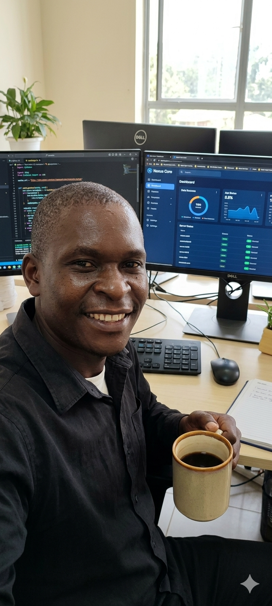

01 / AI PLATFORM
Nexus Core
An agentic AI platform concept built around goal-driven workflows, where specialised agents can coordinate tasks, monitor progress and respond to execution outcomes.
Explore repository ↗Hello, I'm
I build intelligent applications, AI-powered workflows and software that solves practical problems.
Building Intelligent Systems. Turning Ideas Into Reality.

I'm an independent AI and full-stack developer focused on building useful digital products, intelligent agents and automation-driven applications.
My work brings together application development, backend services, API integrations and AI-assisted workflows. I enjoy taking a problem from an initial idea through architecture, implementation and deployment.
I'm interested in opportunities where I can contribute to AI products, automation systems and practical software engineering teams.
A selection of independent software and AI product projects.
An agentic AI platform concept built around goal-driven workflows, where specialised agents can coordinate tasks, monitor progress and respond to execution outcomes.
Explore repository ↗An AI customer-support automation project focused on multi-step support workflows, escalations and operational task handling.
Explore repository ↗A sales workflow application covering lead discovery, qualification, sales conversations and follow-up processes.
Explore repository ↗An agentic sales and marketing project exploring AI-supported social media and marketing operations.
Explore repository ↗A YouTube automation project organised as an application and shared packages.
Explore repository ↗A trading automation application built around a web interface and strategy-oriented trading workflows. Trading involves financial risk; no performance claims are implied.
Explore repository ↗An AI-focused digital marketing application project with application, server, shared and data directories.
Explore repository ↗Workspace, product interfaces and selected project visuals.
A practical toolkit across application engineering and AI automation.
AI agents · LLM applications · n8n · Workflow automation · Prompt design
Node.js · Express · REST APIs · JavaScript · TypeScript
React · HTML · CSS · Responsive interfaces
PostgreSQL · MySQL · MongoDB · Prisma · Docker
Render · Vercel · Google Cloud Run · AWS
Git · GitHub · Postman · Bash · CI/CD fundamentals
Skills reflect tools and technologies used across projects and training; depth varies by technology.
HAVE A PROJECT OR OPPORTUNITY?
I'm open to remote roles, collaborations and conversations about practical AI and software projects.
nyonjeevans@gmail.com ↗